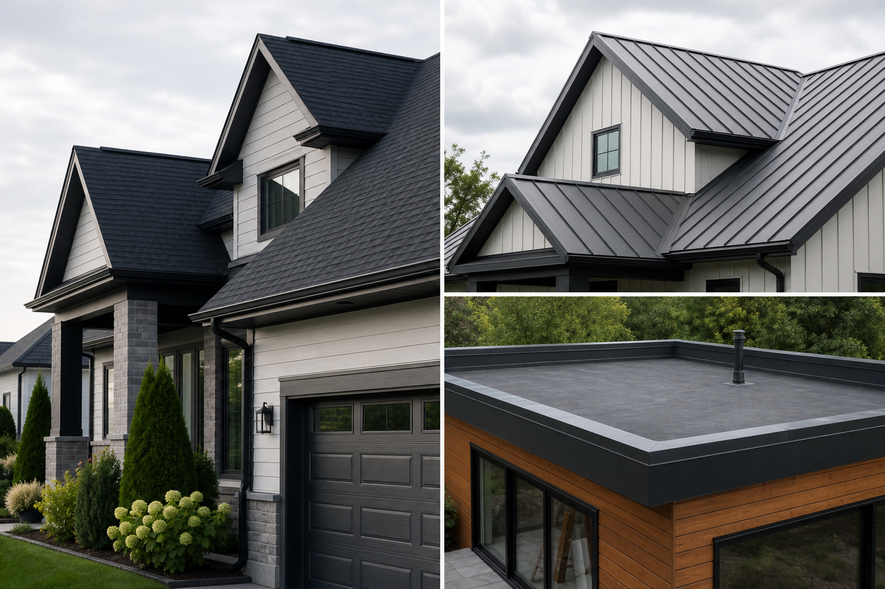

Residential roof repair and replacement
Roofing that is explained before the work starts.
A contractor site should build trust with project photos, inspection steps, materials, warranty terms, service area, and a quote request that feels serious.

Photo-backed inspections
Every quote should explain the issue, show the evidence, and give a clear next step.
Services
Separate small repairs from high-ticket replacement work.
Roofing clients need to understand what kind of job they have, how it is inspected, and what details affect the quote.
Leak and damage repair
For missing shingles, flashing issues, gutter edge damage, and small leaks.
- Photo inspection
- Repair scope
- Timeline estimate
Full roof replacement
For aging roofs, storm damage, or planned upgrades with material options.
- Shingle or metal
- Ventilation check
- Warranty review
Flat roof and extensions
For garages, additions, terraces, and low-slope surfaces that need specialist detail.
- Drainage review
- Membrane options
- Edge detailing
Process
A contractor site should remove doubt step by step.
This is the kind of section that makes a roofing company feel organized instead of random.
Inspect
Confirm roof type, damage, access, safety, and photos.
Explain
Send scope, material options, warranty, and timeline.
Schedule
Confirm deposit, weather window, crew access, and cleanup plan.
Handoff
Provide final photos, warranty notes, invoice, and care advice.
Quote request
Ask for enough detail to qualify the job.
Not every roofing lead is the same. A better form asks for roof type, issue, address area, photos, and preferred inspection time.